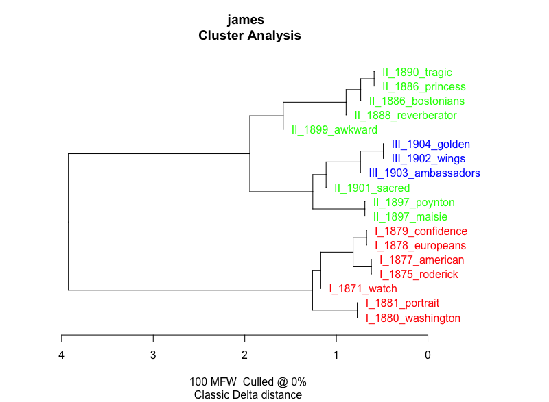
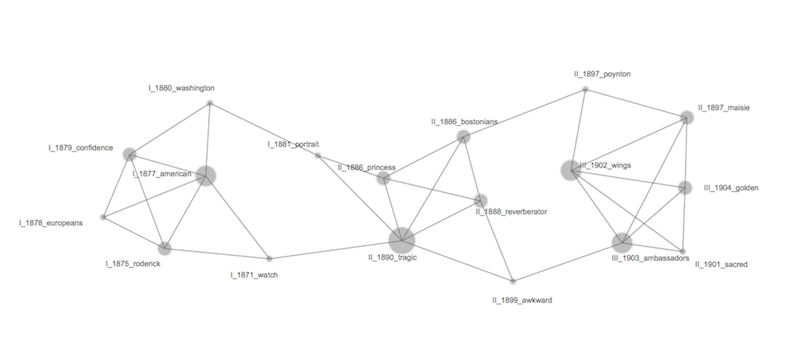
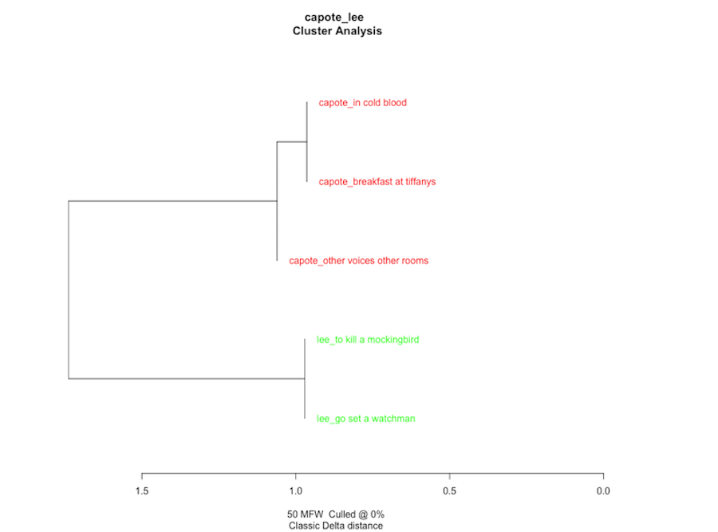
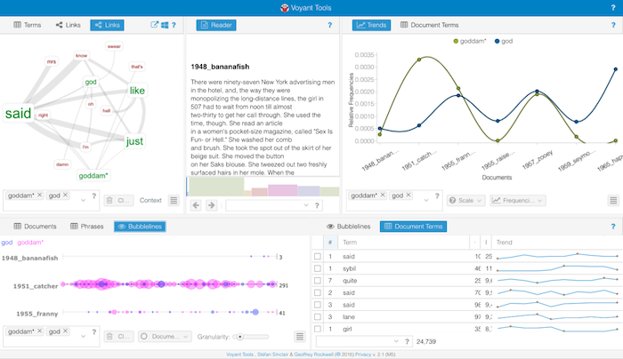

<section id="bio">
<div class="container">
    <h3>Computation and Literary Criticism</h3>
    <div class="panel panel-default">
    <div class="panel-body">
        
        <p>I attended <a href="http://josullivan.org" target="_blank">James O'Sullivan</a>'s 2016 <a href="http://dhsi.org" target="_blank">DHSI</a> course titled Introduction to Computation for Literary Criticism. In the course we were given the opportunity to experiment with a number of tools and methods of statistical analysis, applying them to a variety of data sets.</p>
        
        <p>In most instances we used the stats-centric progamming language <a href="https://www.r-project.org" target="_blank">R</a> with <a href="https://www.rstudio.com" target="_blank">RStudio</a>, an IDE (integrated development environment) for R. With RStudio, we generated different types of visualizations, including dendrograms, rolling delta scatterplots, and bootstrap consensus trees.</p>
        
        <p>In other instances, we used the "web-based reading and analysis environment" <a href="http://voyant-tools.org" target="_blank">Voyant Tools</a>. Voyant comes packed with a number of visualization tools and enables scholars an instantaneous look at language useage across a number of texts.</p>
        
        <p>Finally, we experimented with an open-source topic modeling tool and the network visualization tool <a href="http://hdlab.stanford.edu/palladio/" target="_blank">Palladio</a>.</p>
        
        <p>Selected visualizations from my work in the class are given below.</p>
        
        <hr/>
        
        <h5>Henry James Corpus: Stylometric Cluster Analysis &amp; Network Visualization</h5>
        
        <blockquote>
        <p></p>
        <p></p>
        </blockquote>
        
        <p>The first image is a dendrogram that clusters James's corpus based on a stylometric analysis of the corpus's most frequent words. The second image is the same data fed into Palladio's network visualization tool, offering another view of the same information. The most obvious observation of this simple analysis is how well James's works cluster chronologically, seemingly typifying James's early, mid, and late styles.</p>
        
        <hr/>
        
        <h5>Truman Capote and Harper Lee: Stylometric Cluster Analysis and Rolling Delta Analysis</h5>
        
        <blockquote>
        <p></p>
        <p><a href="static/img/lee1960_to%20kill%20a%20mockingbird001.png"></a></p>    
        </blockquote>
        
        <p>Have you ever heard the rumor that Truman Capote secretly contributed significant passages to Harper Lee's <em>To Kill a Mockingbird</em>? With computational analysis, we are able to test those rumors to a significant degree. The first image is a dendrogram that clusters based on a stylometric analysis of the data set's most frequent words. The second image is a rolling delta analysis that similarly makes comparisons based on most frequent words, but it does so by slicing and comparing individual sections of each text. In both instances, Lee's style remains quite distinct from Capote's, making it unlikely that he contributed significant passages to any of her works.</p>
        
        <hr/>
        
        <h5>J. D. Salinger and Voyant Tools</h5>
        
        <blockquote>
        <p><a href="static/img/salingerVoyant.png"></a></p>
        </blockquote>
        
        <p>Voyant allows scholars a quick look at language across a large corpus. What knowledge might be gained by tracing terms like "god" and forms of "goddamn" across Salinger's chronology? I like the idea that his corpus grows less cynical and more spiritual as the Holden Caulfield persona gives way to Seymour Glass as a young boy.</p>
        
        <p>Note: Voyant Tools does allow for data and visualization embeds, but they are not currently supported by GitHub Pages.</p>
        
    </div>    
    </div>    
</div>    
</section>

